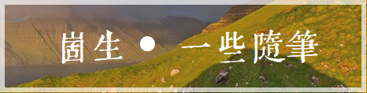
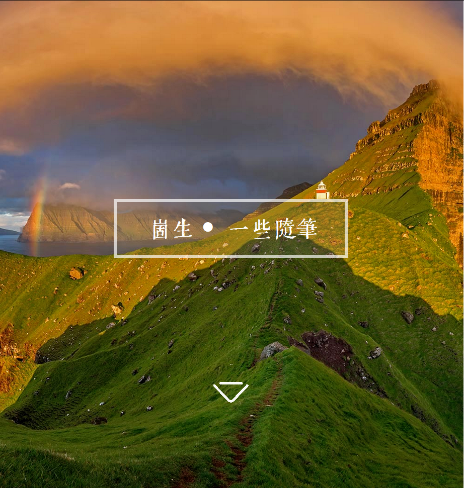
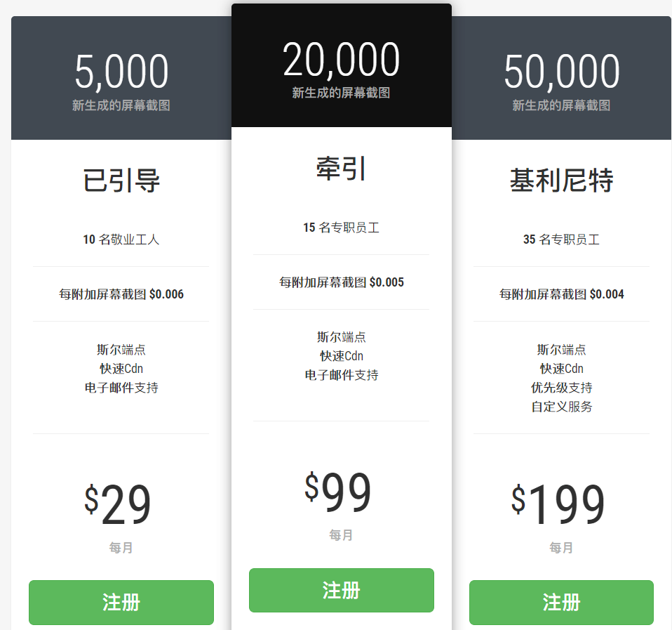

网页截图系统 既访问特定的图片地址会 服务器回去截下来该网页的图片然后返回，还可以通过css选择器来选中其中一部分
例子：
加上css选择器， https://***.com/.png?url=https://shenzilong.cn&cssSelector=.font-QIJIC

直接获取网页截图， https://***.com/.png?url=https://shenzilong.cn

例如在文档中提供某个页面的预览，之后这个页面更新了这里也不需要重新替换图片地址
支持的功能有
缩略图、设置视口尺寸、捕获完整页面、配置不使用缓存、自定义css、延时截图

功能不多
还有一些其他的，和上面两个一样不怎么样，他们仅仅是从网页生成图，没想过这个能用来干什么